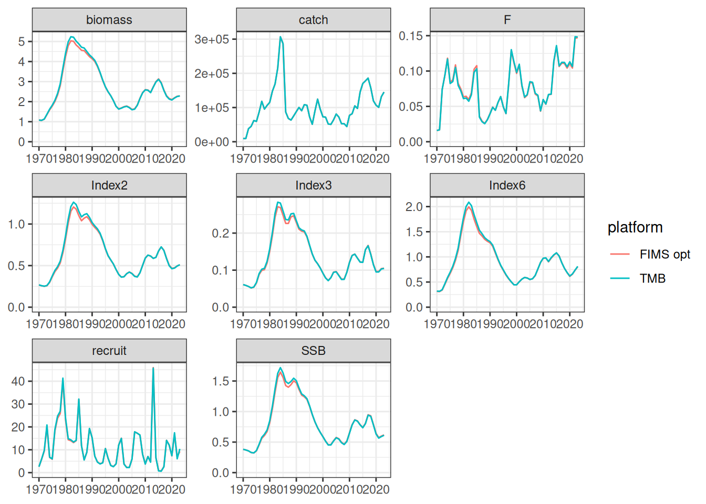
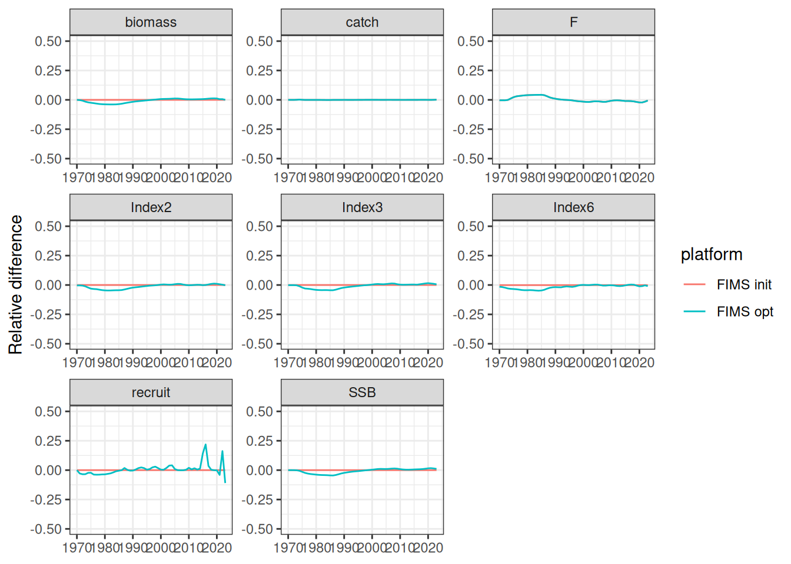
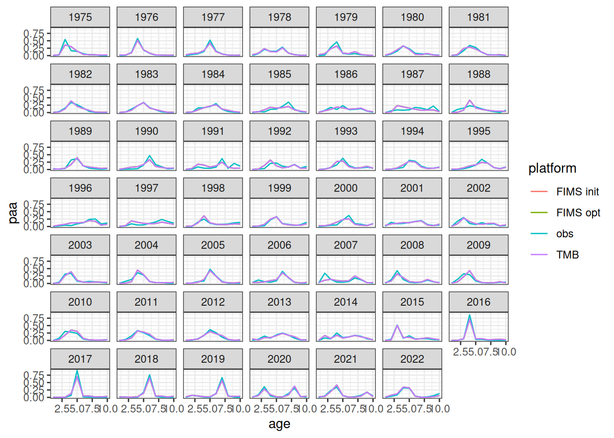
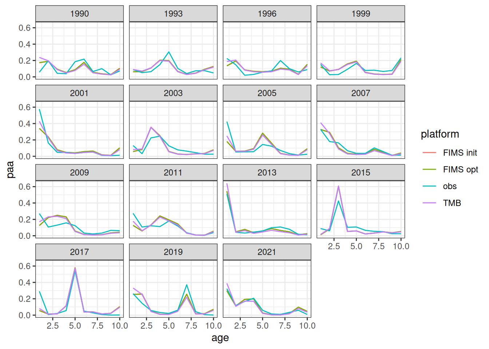
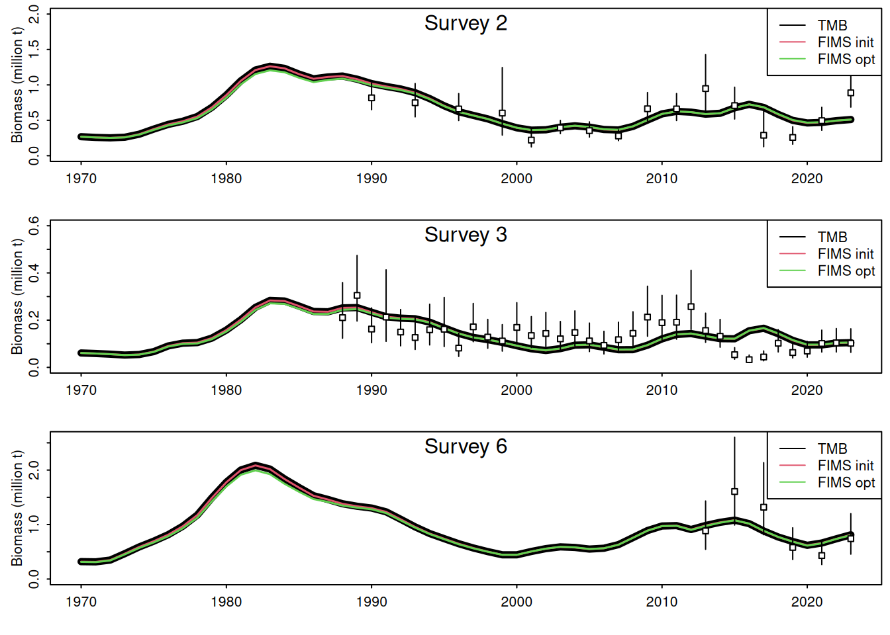

Code
common_name <- "Gulf of Alaska walleye pollock"
# define the dimensions and global variables
years <- 1970:2023
n_years <- length(years)
ages <- 1:10
n_ages <- length(ages)common_name <- "Gulf of Alaska walleye pollock"
# define the dimensions and global variables
years <- 1970:2023
n_years <- length(years)
ages <- 1:10
n_ages <- length(ages)The model presented in this case study was changed substantially from the operational version and should not be considered reflective of the Gulf of Alaska walleye pollock stock. These results are intended to be a demonstration and nothing more.
To get the operational model to more closely match a FIMS model the following changes were made:
#
## This will fit the models bridging to FIMS (simplifying)
## source("fit_bridge_models.R")
## compare changes to model
pkfitfinal <- readRDS(file.path(data_directory, "pkfitfinal.RDS"))
pkfit0 <- readRDS(file.path(data_directory, "pkfit0.RDS"))
rep0 <- pkfitfinal$rep
parfinal <- pkfitfinal$obj$env$parList()
pkinput0 <- readRDS(file.path(data_directory, "pkinput0.RDS"))
fimsdat <- pkdat0 <- pkinput0$dat
pkinput <- readRDS(file.path(data_directory, "pkinput.RDS"))
data_4_model <- prepare_pollock_data(
pkfitfinal = pkfitfinal,
pkfit0 = pkfit0,
parfinal = parfinal,
fimsdat = fimsdat,
pkinput = pkinput,
years = years,
n_years = n_years,
ages = ages,
n_ages = n_ages
)FIMS::clear()
estimate_fish_selex <- TRUE
estimate_survey_selex <- TRUE
estimate_q2 <- TRUE
estimate_q3 <- TRUE
estimate_q6 <- TRUE
estimate_F <- TRUE
estimate_recdevs <- TRUE
# Create parameters list and update default values for parameters
default_parameters <- FIMS::create_default_configurations(
data = data_4_model
) |>
tidyr::unnest(cols = data) |>
dplyr::rows_update(
tibble::tibble(
module_name = "Selectivity",
fleet_name = c("fleet1", "survey2", "survey6"),
module_type = "DoubleLogistic"
),
by = c("module_name", "fleet_name")
) |>
FIMS::create_default_parameters(
data = data_4_model
) |>
tidyr::unnest(cols = data) |>
dplyr::rows_update(
tibble::tibble(
module_name = "Selectivity",
fleet_name = "fleet1",
label = c(
"inflection_point_asc", "slope_asc",
"inflection_point_desc", "slope_desc"
),
value = c(
parfinal$inf1_fsh_mean,
exp(parfinal$log_slp1_fsh_mean),
parfinal$inf2_fsh_mean,
exp(parfinal$log_slp2_fsh_mean)
),
estimation_type = "fixed_effects"
),
by = c("module_name", "fleet_name", "label")
) |>
dplyr::rows_update(
tibble::tibble(
module_name = "Selectivity",
fleet_name = "survey2",
label = c(
"inflection_point_asc", "slope_asc",
"inflection_point_desc", "slope_desc"
),
value = c(
parfinal$inf1_srv2,
exp(parfinal$log_slp1_srv2),
parfinal$inf2_srv2,
exp(parfinal$log_slp2_srv2)
),
estimation_type = rep(c("fixed_effects", "constant"), each = 2)
),
by = c("module_name", "fleet_name", "label")
) |>
dplyr::rows_update(
tibble::tibble(
module_name = "Selectivity",
fleet_name = "survey6",
label = c(
"inflection_point_asc", "slope_asc",
"inflection_point_desc", "slope_desc"
),
value = c(
parfinal$inf1_srv6,
exp(parfinal$log_slp1_srv6),
parfinal$inf2_srv6,
exp(parfinal$log_slp2_srv6)
),
estimation_type = rep(c("constant", "fixed_effects"), each = 2)
),
by = c("module_name", "fleet_name", "label")
) |>
dplyr::rows_update(
tibble::tibble(
module_name = "Selectivity",
fleet_name = "survey3",
label = c("inflection_point", "slope"),
value = c(
parfinal$inf1_srv3,
exp(parfinal$log_slp1_srv3)
)
),
by = c("module_name", "fleet_name", "label")
) |>
dplyr::rows_update(
tibble::tibble(
module_name = "Maturity",
label = c("inflection_point", "slope"),
value = c(4.5, 1.5)
),
by = c("module_name", "label")
) |>
dplyr::rows_update(
tibble::tibble(
module_name = "Recruitment",
label = c(
"log_rzero",
"logit_steep",
"log_sd"
),
value = c(
parfinal$mean_log_recruit + log(1e9),
FIMS::logit(0.2, 1.0, 0.99999),
parfinal$sigmaR
)
),
by = c("module_name", "label")
) |>
dplyr::rows_update(
tibble::tibble(
module_name = "Population",
label = c("log_init_naa"),
age = ages,
value = c(log(pkfitfinal$rep$recruit[1]), log(pkfitfinal$rep$initN)) + log(1e9),
estimation_type = "constant"
),
by = c("module_name", "age", "label")
) |>
dplyr::rows_update(
tibble::tibble(
module_name = "Population",
time = rep(years, each = FIMS::get_n_ages(data_4_model)),
age = rep(ages, FIMS::get_n_years(data_4_model)),
label = "log_M",
value = log(as.numeric(t(matrix(
rep(pkfitfinal$rep$M, each = FIMS::get_n_years(data_4_model)),
nrow = FIMS::get_n_years(data_4_model)
))))
),
by = c("module_name", "label", "time", "age")
) |>
dplyr::rows_update(
tibble::tibble(
module_name = "Recruitment",
label = "log_devs",
time = years[-1],
# The last value of the initial numbers at age is the first
# recruitment deviation
value = parfinal$dev_log_recruit[-1],
),
by = c("module_name", "label", "time")
) |>
dplyr::rows_update(
tibble::tibble(
module_name = "Fleet",
fleet_name = "fleet1",
time = years,
label = "log_Fmort",
value = log(pkfitfinal$rep$F)
),
by = c("module_name", "fleet_name", "label", "time")
) |>
dplyr::rows_update(
tibble::tibble(
module_name = "Fleet",
fleet_name = c("survey2", "survey3", "survey6"),
label = "log_q",
value = c(parfinal$log_q2_mean, parfinal$log_q3_mean, parfinal$log_q6),
estimation_type = "constant"
),
by = c("module_name", "fleet_name", "label")
)
# Put it all together, creating the FIMS model and making the TMB fcn
# Run the model without optimization to help ensure a viable model
test_fit <- default_parameters |>
FIMS::initialize_fims(data = data_4_model) |>
FIMS::fit_fims(optimize = FALSE)
FIMS::get_obj(test_fit)$report()$nll_components |> length()[1] 9FIMS::get_data(data_4_model) |>
dplyr::filter(name == "fleet1", type == "age_comp") |>
print(n = 10)# A tibble: 540 × 7
type name age timing value unit uncertainty
<chr> <chr> <dbl> <dbl> <dbl> <chr> <dbl>
1 age_comp fleet1 1 1970 -999 "" 1
2 age_comp fleet1 2 1970 -999 "" 1
3 age_comp fleet1 3 1970 -999 "" 1
4 age_comp fleet1 4 1970 -999 "" 1
5 age_comp fleet1 5 1970 -999 "" 1
6 age_comp fleet1 6 1970 -999 "" 1
7 age_comp fleet1 7 1970 -999 "" 1
8 age_comp fleet1 8 1970 -999 "" 1
9 age_comp fleet1 9 1970 -999 "" 1
10 age_comp fleet1 10 1970 -999 "" 1
# ℹ 530 more rows# Run the model with optimization
fit <- default_parameters |>
FIMS::initialize_fims(data = data_4_model) |>
FIMS::fit_fims(optimize = TRUE)✔ Starting optimization ...
ℹ Restarting optimizer 3 times to improve gradient.
ℹ Maximum gradient went from 0.00531 to 0.00048 after 3 steps.
✔ Finished optimization
✔ Finished sdreportWarning: ! Large condition number detected in Hessian; the matrix may be near singular.
ℹ Condition number of Hessian ("1.518566e+05") exceeds threshold of 1e+05.
ℹ This suggests the model is weakly identified and results may be unreliable.
ℹ Consider simplifying the model, improving data quality, or fixing poorly
informed parameters.
ℹ The 2 largest standard error values are for parameters:
ℹ 1. "expected_recruitment.53": "8.701804e+09"
ℹ 2. "numbers_at_age.530": "8.701804e+09"
ℹ Standard errors and MLEs may be unreliable.ℹ FIMS model version: 0.9.2
ℹ Total run time was 30.80789 seconds
ℹ Number of parameters: fixed_effects=66, random_effects=53, and total=119
ℹ Maximum gradient= 0.00048
ℹ Negative log likelihood (NLL):
• Marginal NLL= 3302.808
• Total NLL= 3242.3832
ℹ Terminal SB= 633843606.87812## report values for models
rep1 <- FIMS::get_report(test_fit) # FIMS initial values
FIMS::get_max_gradient(fit) # TODO: from Cole, can use TMBhelper::fit_tmb to get val to <1e-10[1] 0.0004766463rep2 <- FIMS::get_report(fit)
output <- get_estimates(fit)




The likelihood components from the TMB model do not include constants and thus are not directly comparable. To be fixed later. Relative differences between the modified TMB model and FIMS implementation are given in the figure above.
To do
FIMS::clear()